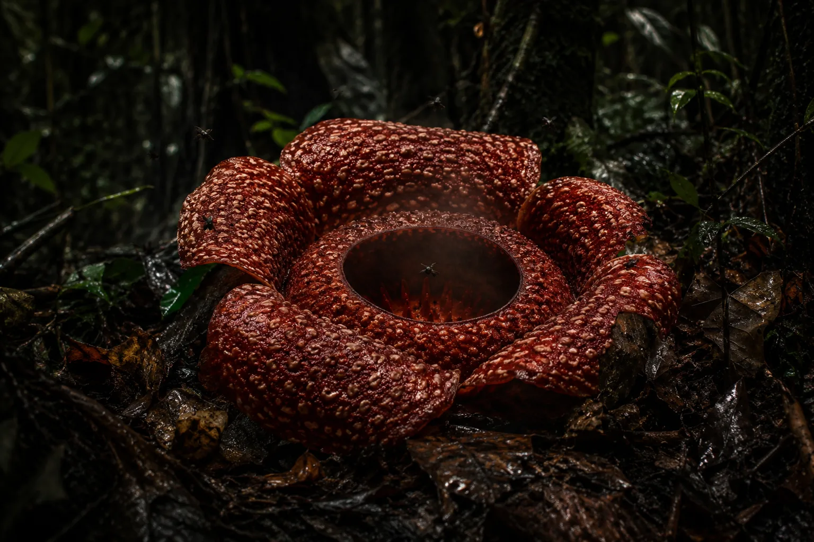
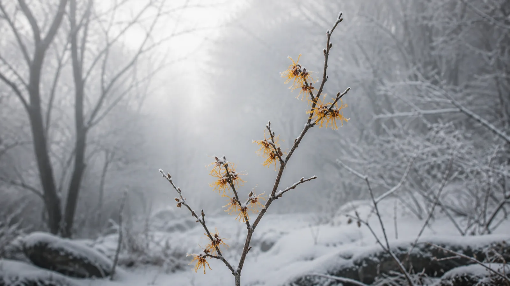
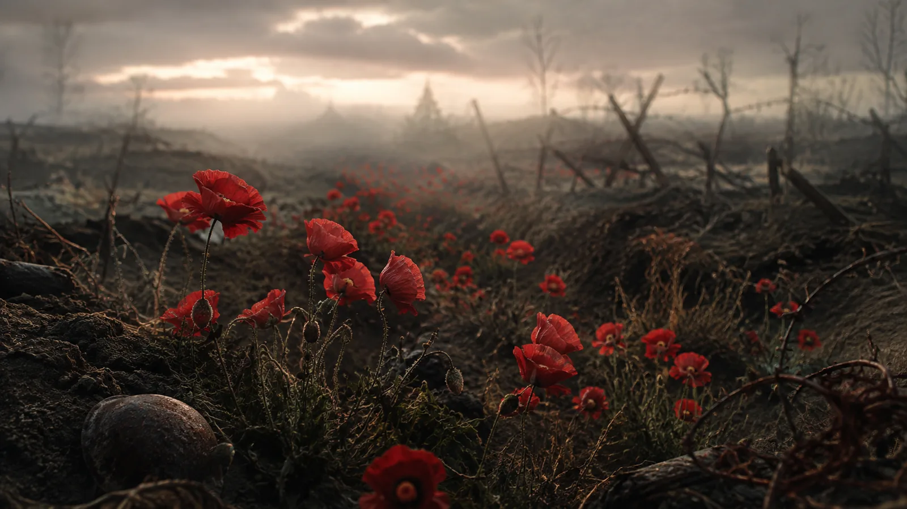
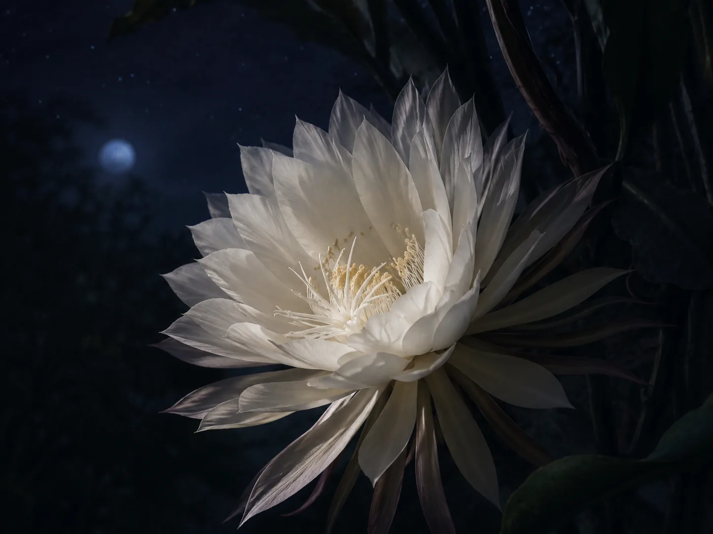
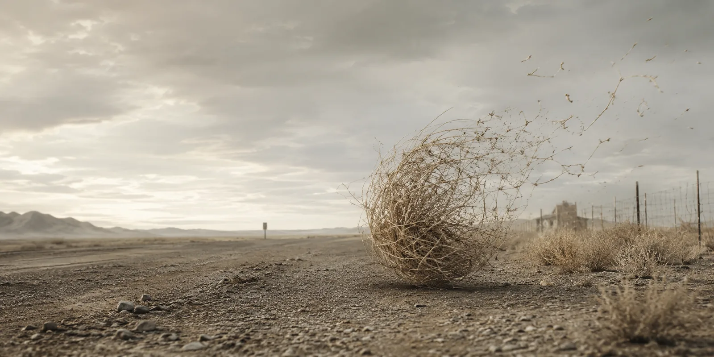

Rafflesia
It erupts, after years of biding its time. A living wound splitting open in the heart of the jungle, flesh-red and mottled and rotting, its gaping maw exhaling something foul enough to make even the carrion-birds pause mid-flight and recoil. A deception, a grotesque mimicry of rot, built to lure. The air thickens with its stench, an offering meant for the flies, the heralds of decay, the vassals of death, who descend in buzzing clouds, sinking greedily into the folds of its putrid flesh.
There is no slender stem, no gentle sway in the breeze. Only this — five fleshy lobes, sprawled in the dim, repulsive green light, suffocating in its stillness, a flower that feeds without mouth or root, growing from the veins of another, a grimacing spectacle.
Some say it is rare. Others say it is cursed. But it simply waits for the right moment to bloom. Then it breaks free, as if the earth itself had split apart to reveal some ancient, nameless horror. And for a few short days, it rules the forest floor, rules against time, before collapsing inward, curling into itself, sinking back into the body it stole life from. Its stolen life form.
There is no grave for rafflesia.

Witch Hazel
It blooms when the world does not ask it to, when the trees stand bare and brittle, when the earth draws into itself, shivering against the cold.
It defies time. Blooming when flowers should not bloom, thriving when life should retreat. There is something uncanny in its persistence, as if it remembers a secret all other plants have long forgotten.
The wind moves through the trees, sharp as broken glass, yet witch hazel does not retreat. Instead, it thrives where time falters, where the days feel stretched thin, as though the year itself hesitates. It does not sway in the breeze, but it shivers and clings, holds fast to its seasonless domain, where surely no one is to see.
The snow comes, bitter and harsh, but the petals do not fall. They tremble, but they stand. A fleeting gold against the gray bones of winter, casting spells that no one dares to name, desperate to touch the sky before its final song.

Poppies
The war-torn fields do not forget.
Even after the boots have marched away and the rifles have fallen silent.
Even after the world has decided that nothing remains to be mourned.
The poppies rise. They bloom where the earth has been turned by war, where the bones have settled into dust, where grief has been buried deep beneath layers of time.
They are small fires against the endless ashes. Flame-red, swaying despite the stillness that lingers in the air. Ashen, yet not lifeless. Beauty where there should be sorrow. Life where there was ruin.
They do not plead for poetry nor silence nor reverence. They only bloom, year after year, in fields that once knew the worst of man. They keep growing, keep returning, even when the world moves on.

The Queen of the Night
She lurks in the silence, broods in the darkness. She does not unfurl with the eager urgency of the day-bloomers, throwing petals into the sunlight, waiting for bees to stumble upon her.
All day she waits, silent, folded inward, hidden. The others bloom around her, reckless, impatient, squandering their beauty in the garish light of day. But she knows better. She knows that some secrets are kept but for starlight.
And so, when the world begins to sleep, she blooms silently. The petals uncoil, stretching in slow, deliberate silence. Her color is neither pure nor passive — white, yes, but burning with scent, as the moon itself does. It wraps itself around those who pass too close, making them pause, making them breathe in something they will never truly understand nor quite forget.
For a few hours, she reigns — untouched by mortality, unbothered by time’s demand. But the night does not last. And the dawn does not ask permission.
So she counts the hours until her own funeral, fighting against time. And when the night does end, she folds inwards again, retreating into absence, taking her secrets with her. No wilted remnants, no scattered petals, no proof she was ever there.

Tumbleweed
It knows no home. No country. No roots. Only the wind, and its ruthless summons. It tumbles as if fleeing something unseen, perhaps from time itself, bounding over sand-drowned roads, scraping against rusted wire fences, spinning through the skeletal remains of towns long emptied. It did not care for direction. Direction was for the living.
It scraped across the alkali flats, shedding spines like a snake shedding skin it no longer needed. Sometimes it caught on barbed wire, trembling there, like a trapped ghost. But the wind always returned, always whispered, Move, move, you are not allowed to rest. And so, it did, breaking apart slowly, slowly, scattering itself in fragments across the dust. By the time it finally crumbled into nothing, it had crossed the same patch of earth three times.
It is not a life. It is unraveling.
It has rattled down highways where forgotten signs point to nowhere. It has passed through spaces where voices once gathered, now abandoned, left only to the dust and the memories the dust refuses to keep.
Where does it go? Wherever the wind demands, it tumbles, and goes.
